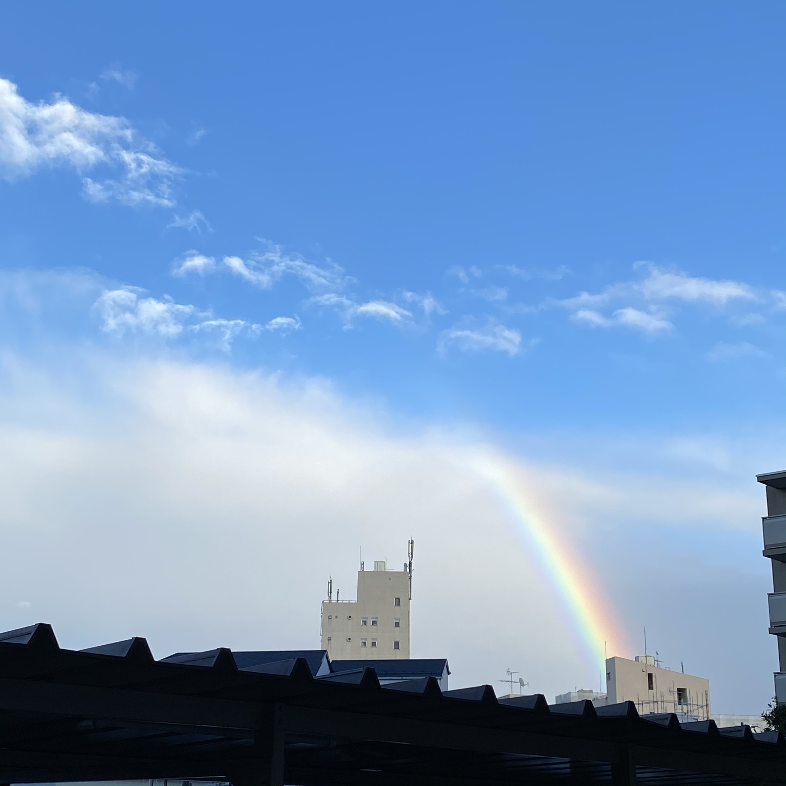

よく晴れた秋の空。東京もまだまだ空気がきれいで安心した。

箱根駅伝を直前に迎えた日本橋。空には昼間から三日月が出ていた。

渋谷、ガラス越しの夕焼け。空にはきれいなグラデーションができていた。さすが高層ビルからの眺めは良い。

千葉。うっすら膜のように浮かぶ雲も好きで撮ってしまう。誰も上を見ていなくて、少し悲しかった。

クリスマスシーズン、閑散としたイルミネーションスポットにあったツリーを撮っていたら月も映った。上の写真と同じ月のような気がする。
タイのどこかのリゾート地。サンセットを見られる時間帯を教えてもらいしっかり撮った。他にもこの瞬間を狙っていた人がちらほら居た。

サムイ島というタイの島。首都であるバンコクは空気が汚いのでこのような青空を見られるのは特に島にいるときだと思う。
タイのどこかのリゾート地。海も空もきれいな場所。

土砂降りに遭い、急激に晴れたあとの空。周辺に居た人はみな同じ方向を向いて虹を見ていた。